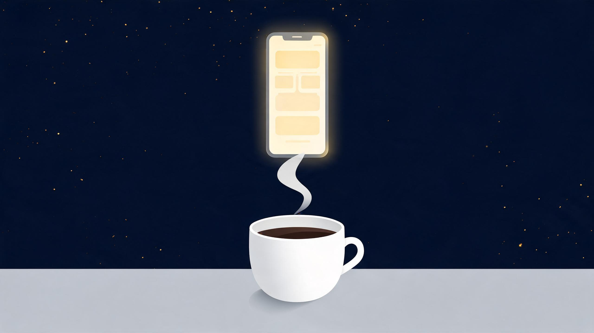
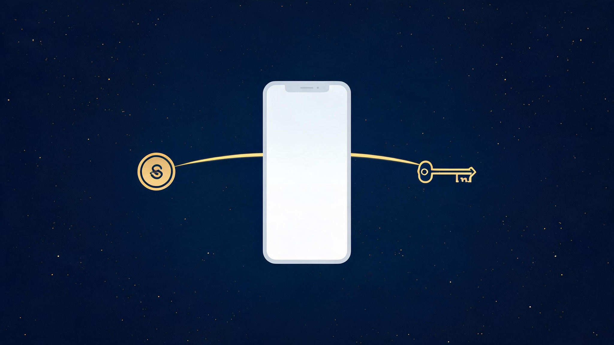

挑战30天自学Web出海 · 第18天
第 18 天，来聊聊除了出海 Web 形态以外的，国内市场形态。
以终为始，我们费劲巴拉做这么多，最终目的是为了商业变现，而不是做 demo、自我欣赏。所以第 1 步先是想变现渠道，第 2 步是选市场——国内还是海外，第 3 步才是选形态。
如果想通过用户付费来变现，优先做海外。为什么？因为海外，特别是欧美国家的用户付费能力强、付费意识和付费习惯好。
那么海外选什么形态呢？Web。为什么不选 App 呢？老外使用 Web 的习惯依然保持得很好；其次，Web 的成交路径比 App 短——App 需要更大的成本去投入去推广，往往在 App 下载这一关就流失掉大量潜在用户。

一杯咖啡的钱，启动一个小程序项目
如果想通过靠广告和流量来变现，优先做国内。国内情况又不太一样了——如果还是靠 Web，那是逆水行舟，会特别难。你自己经常去打开网页吗？并且在网页上去订阅一个软件吗？我想并不会吧。但你几乎会天天打开 App。
App 里面有个巨无霸，那就是微信。微信月活 13 亿——什么概念？相当于地球的六分之一人口，每个月都在频繁用微信。这么庞大的用户池子里，普通开发者有没有一些机会呢？我们都知道，微信里面有一个小程序——不用下载、不用安装，体验跟 App 差不多。这就是在国内做应用的机会。
现在微信有一些政策，让你可以用一杯星巴克咖啡的钱，就能启动一个小程序项目。以前做一个类似项目，怎么也得几万块起步吧？服务器、域名、开发外包……现在几十块钱。
这个成本可以让你放心大胆干，不断试错。做一个，不行，换一个。每个小程序都是一次低成本的实验——想到一个点子就快速验证，做不起来就换下一个。
这是最简单的变现方式。小程序上线后，只要有用户在用，微信会自动在你的小程序里展示广告。用户看到广告，你就有收入。每天上午 8-10 点更新前一天的数据，腾讯扣完税后 15 个工作日内自动打款到你账上。
还有一个"无感"功能：系统可以自动往你的小程序里插入广告组件。你连广告代码都不用写，微信帮你搞定——新手不用研究广告 SDK，上线就能变现。

小程序的两种变现方式：广告分成 + 订阅制
做一个产品，持续收钱。订阅制就是用户按月或者按年付费，开通你小程序的会员。和广告分成不同，订阅制的天花板更高，但也更需要你认真打磨产品。
比如，让免费用户每天有少量使用额度，额度用完就弹窗提醒你升级会员。喜欢这个工具的用户，就会一直续费。
的确，国内走订阅路线会很难，大家都喜欢用免费的东西。但可以把广告和订阅结合起来：90% 的用户让它看广告免费，10% 的订阅用户没有广告，还提供免费用户没有的额外特权。
如果你想海外国内两条路同时走，建议：先在海外做付费验证，再回国内做广告版本。
我是未迟，正在挑战30天自学web出海，如果你对此话题有兴趣，欢迎交流，我们下期见。